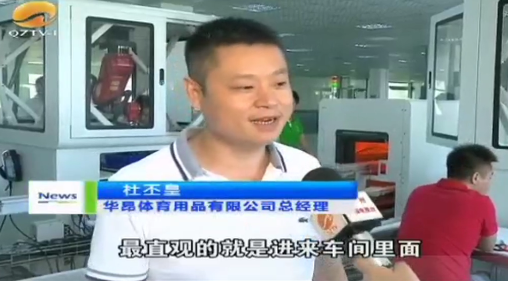
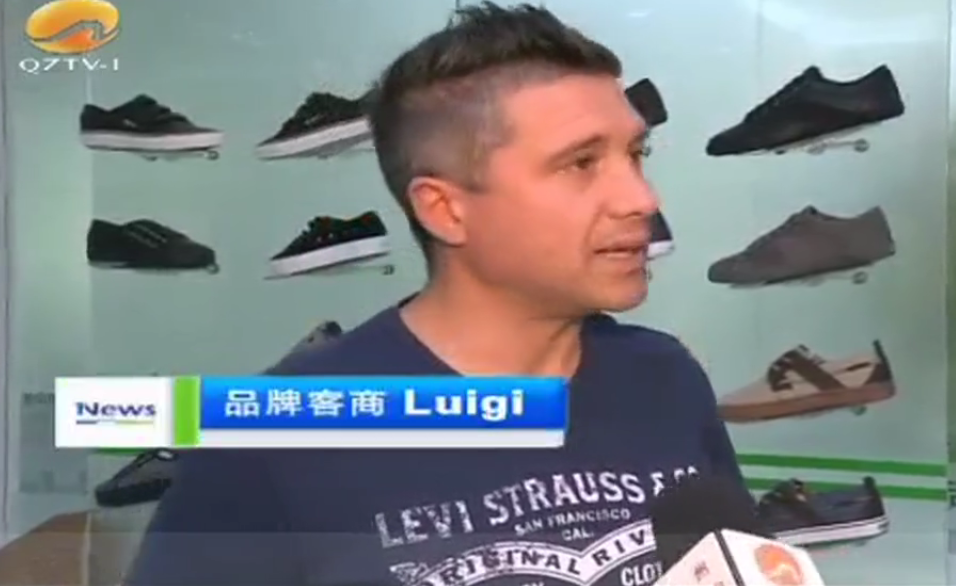
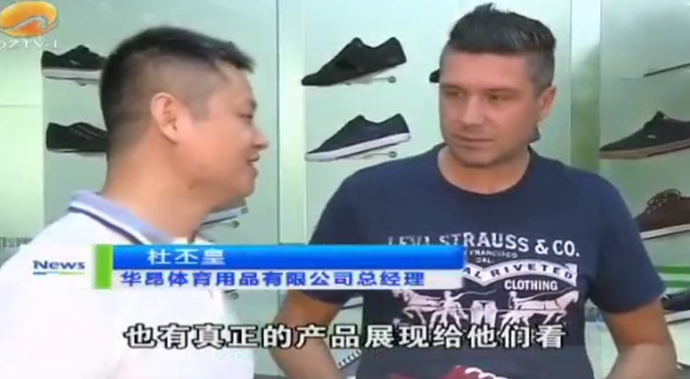

福厦泉国家自主创新示范区建设两年多来，推出的40项全国、全省首创的举措，首批6项举措在全省推广。其中，泉州在全省首创的“一院一策”引进高校院所模式收效明显。目前引进的一批重大科研成果已经向产业转化，收获颇丰，有效促进了“产学研”深度融合。尤其以我院的休闲鞋（硫化鞋）智能成型生产线最为突出。
休闲鞋（硫化鞋）智能成型生产线这条生产线是我院与华宝智能科技公司共同研发。与传统的生产线相比，该生产线一班可生产1500双鞋，仅需12名工人，平均12秒就可生产一只硫化鞋，而此前同样的产量需要65名工人。

硫化鞋项目负责人 苏惠阳
“已经把生产线的智能化，覆盖了80%左右。剩下一些，相对需要人工灵活的，我们也帮他们做了相应的辅助工作，设置了相应的辅助工作站，来减轻他们的劳动强度。”效益的提升，生产环境也大为改变，和车间嘈杂，胶水味弥漫的传统生产线相比，这条智能生产线专门设计了喷胶尾气收集排放系统，使生产环境空气清新舒适。

华昂体育用品有限公司总经理 杜丕皇
“最直观的体验就是进来车间里面，没有以前那么热闹，就只剩下六七个人，很简单，整个环境变得很舒适。”这条休闲鞋（硫化鞋）智能成型生产线是首次落地企业进行大规模生产，企业之所以愿意出重金购买这条生产线，成为第一位吃螃蟹的人，就是看重这条生产线的“吸金能力”。生产线才刚试运行，和企业合作六年的品牌客商立刻增加订单，并介绍其他同行前来。

品牌客商 Luigi
“保持期待，会关注这个项目，相信我们自动化的成功，可以给我们的生意带来一个新的改变。”

华昂体育用品有限公司总经理 杜丕皇
“国际鞋业品牌看到我们用自动化线来做，也有真正的产品展现给他们看，他们感觉这个产品品质比手工作业的要好，所以现在是有大概有六个品牌未来会大量的合作。”
记者获悉，这条生产线从研发到投产，仅用了三年时间。缩短科技成果转化为生产力的时间，服务产业发展，这是“一院一策”模式在泉州取得的最明显成效。获批国家自主创新示范区后，为了更好地集聚和引进高端创新资源，我市采取“一院一策”模式，在人才引进、平台建设、成果转化、规划用地、经费支持等方面给予高校院所支持，最大限度地调动院校和科研人员的创新创业积极性。在40项全国、全省首创创新举措的激励下，我市高新技术产业板块发展壮大，高新技术企业、科技小巨人领军企业达783家；创新创业生态进一步优化，已建成34家科技孵化器、53家众创空间、9家国家级星创天地。（泉州广播电视台《今晚播报》专访硫化鞋项目，视频链接：https://mp.weixin.qq.com/s/tQuvjC1M_5BpOHF8XxgJQg）